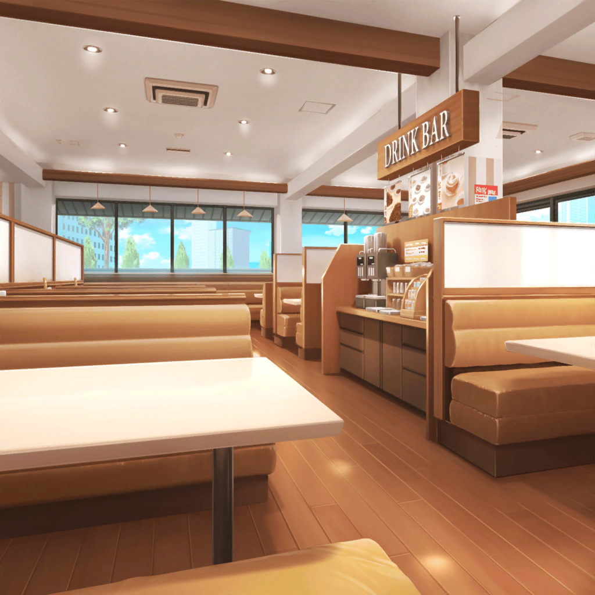
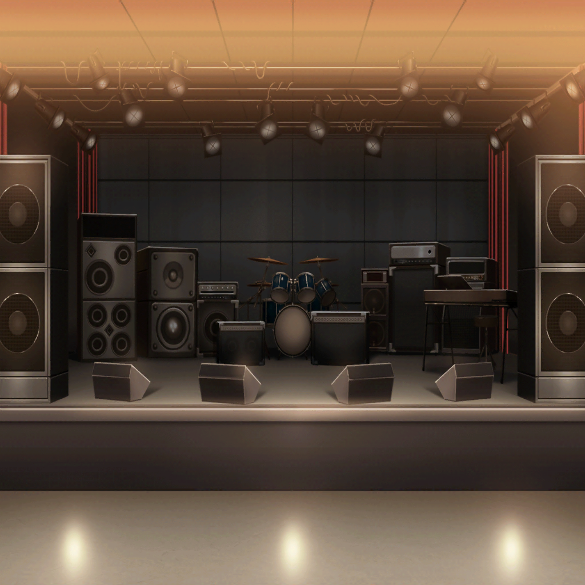

ファミリーレストラン
友希那・紗夜
…………
リサ
ちょっともー二人とも～……
相変わらずクールだなーーっ
紗夜
冷めてたらこんなところに来ません
友希那
そうよ
あこ
そうですよっ！ 紗夜さんも友希那さんも、
Wハンバーグ＆エビフライ＆チキンソテーのプレート、
ご飯大盛りデザート付きでいいですかっ？
友希那・紗夜
…………
リサ
よしっ！ じゃあ五人ともそれでっ！
燐子よろっ♪
燐子
はい。
……スーパーやけ食いセット……
五人前……ですね……
友希那・紗夜
…………
リサ
（結果としては、こうなっちゃったけど……）

コンテスト 結果発表
司会
エントリーNo.15 バンド名……
受賞したバンドは以上です
他の応募者
ねえ……Roselia、入ってなかったよね？
有力候補って言われてたのに……
紗夜
（私たちが……）
友希那
（……落ちた……！）
リサ・燐子
……！！
司会
講評を聞きたいバンドは、控室で残って下さい。
他のバンド、ご来場の皆様は……
あこ
……なんで？ 友希那さん、こんなの……
友希那
……講評を聞く。
理由を考えるのは、それからよ

審査員１
素晴らしい演奏だったわ。
本大会で、限りなくトップに近いレベルだった
紗夜
……なら！
なぜですか。
なぜ……私たちは落選なんです？
審査員２
あなたたちは結成して、とても日が浅いそうね
友希那
浅くても、練習量は他のバンドと変わりないはずです
審査員１
そう。……だからこそあなた達には、
このコンテストで『入賞』してフェスに出るのではなく
『優勝』して、メインステージに立ってほしいの
全員
——！！
審査員２
FUTURE WORLD FES.が、ただのフェスでないことは
わかっているわね。
私たちは、このジャンルを育てる為の運営をしています
審査員１
あなた達はまだ若く、ビジュアルもいい。
きっと話題にはなるでしょう。
でも、このジャンル、シーンのためには『今』じゃない
審査員２
結成から日も浅く、短期間の練習でとても荒削りなのに、
私たちをここまで惹きつけた。
Roselia。あなた達には、伸びしろがありすぎる……
審査員１
来年、もう一回り成長した姿を私達に見せて下さい
リサ
落選したけど、すっごく認めて貰えてたし
アタシはそんなに悪くないんじゃないかって……
ファミレスの店員
お待たせしました～！
Wハンバーグ＆エビフライ＆チキンソテーのプレート、
ご飯大盛りデザートのセットです～
紗夜
私は認めないわ……むぐ
友希那
そうよ。このジャンルを育てていきたいのなら、
私たちを優勝させて、もっと大きな活動を……もぐ
紗夜・友希那
（でも………）
あこ
むぐ……たしかにすっごい悔しいけど、
でもっ、それがどうでもよくなるくらい、
あこ、……楽しかった！！
リサ
あー……ちょっと、わかっちゃう……なぁ……
燐子
わたしも……今まででいちばん……
紗夜・友希那
……！
紗夜
あ、あなた達っ、
なんの為に練習してきたと思ってるのよ……
友希那
そうよ。Roseliaは
自分達の音楽を極めるために……
友希那
（私……今まであんなに、
お父さんの為にって、思ってたのに……
歌っている間、何も考えてなかった……）
友希那
私は……どんなに認められても、
父親の立てなかったステージで歌うまでは
自分で自分を認められない
リサ
友希那……
紗夜
（ただ、……夢中で、
日菜に負けないという一心でやっていた筈なのに、私……）
紗夜
そうね……私も……
ーー？
あの、なにか私に用ですか？
ファミレスの客
あ、あのっ、もしかして
Pastel＊Palettesの日菜ちゃんのお姉さんですか？
すごい似てるなーと思って……！
紗夜
……そうです
ファミレスの客
きゃーっ。
やっぱお姉ちゃんいるってほんとだったんだ。
すごーい。あっ、ありがとうございましたっ
紗夜
（……私も、湊さんと同じ……
日菜の存在から、逃げることはできない……）
リサ
（友希那がお父さんのことを
笑って話せるようになるまで、アタシは……）
燐子
わたしも……やっぱり……このみんなで、
FUTURE WORLD FES.に出たいです。
……それを目指してきた今までが……とても、楽しかったから
リサ
燐子……
アタシも……！ アタシもまだ、もっと
このバンドをやりたい！ だって……楽しかったから！
リサ
（友希那に……そして、紗夜にも、もっともっと、
楽しいって思ってもらいたい……から）
あこ
あこも、あこも！ なんか今日っ、紗夜さんに言われた
『あこだけのカッコイイ』、ちょっとだけ掴めた気がして……
そしたら優勝できるんじゃないかって……！
全員
…………
紗夜
思うところは……皆様々だけど……
友希那
来年もコンテストに出る。——そして優勝する。
その気持ちは、同じようね
リサ
……っ。……へへっ。
じゃあこれからも、みんなでRoselia頑張ろうねっ！
なんかあったら、こうやって、ファミレスに来たりさっ！
友希那・紗夜
しないわよ
友希那・紗夜
……！
紗夜
二度とこんなところに来ないように、
もっともっと、これから練習するのよ。
無駄に出来る時間はないわ。そろそろ帰りましょう
リサ・あこ
えーーもうちょっとーー
友希那
Roseliaに馴れ合いは要らない。
友達ごっこがしたい人は、今すぐ抜けてもらうわよ